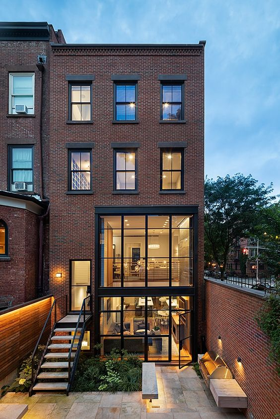

Le bien phare de cette semaine
Dans cet article, nous allons vous présenter notre bien phare de cette semaine. Il s'agit d'une superbe maison située au cœur de la ville, avec des caractéristiques exceptionnelles et des finitions haut de gamme. Cette propriété offre une vue imprenable, des espaces de vie spacieux, et un jardin magnifiquement entretenu. C'est l'occasion parfaite pour ceux qui cherchent une maison de rêve.
La maison est équipée de toutes les commodités modernes, incluant une cuisine entièrement équipée, des salles de bains luxueuses, et des chambres confortables. Ne manquez pas cette opportunité unique de posséder un bijou immobilier.